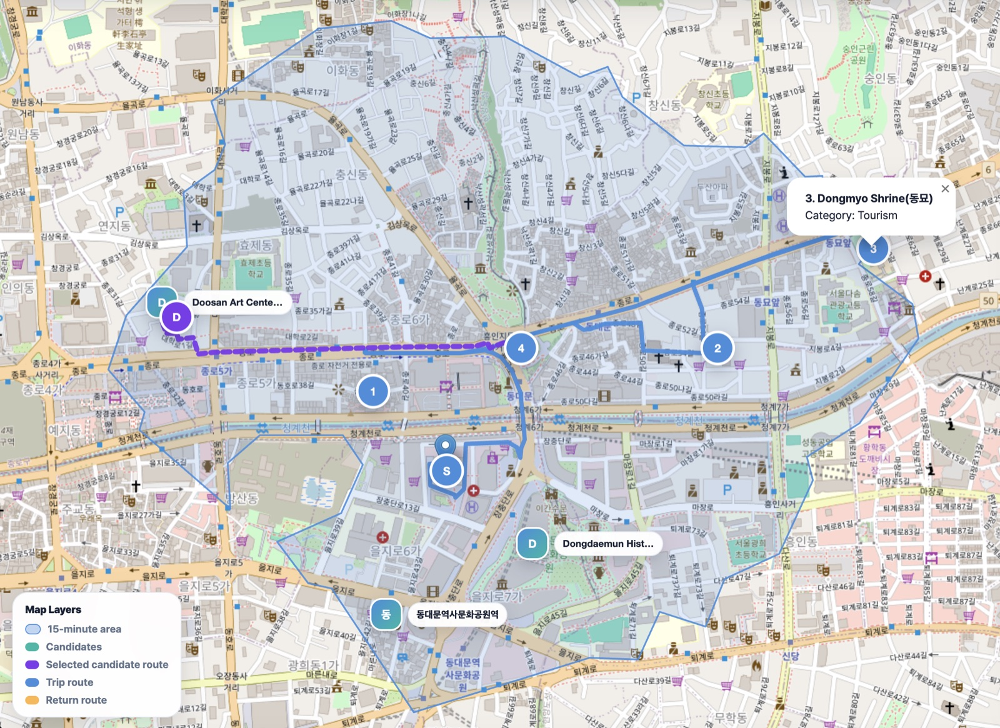

B2B PARTNERSHIP PROPOSAL
서울 도보 관광의 새로운 파트너,
Step Seoul
Your Partner for Seoul's Next Wave of
Walking Tourism
종로·중구 일대, 도보 15분 이내 맞춤 관광 루트로 투숙객·여행객의 체류 만족도를 높이세요. 랜드마크를 넘어 골목 곳곳의 진짜 서울을 연결합니다.
Boost guest satisfaction with curated 15-minute walking routes around Jung-gu & Jongno-gu — connecting travelers to the real Seoul beyond the landmarks.
2025년 방한 외국인 입국자 수
Foreign arrivals to Korea in 2025
서울 방문 비율 · 전국 최상위
Visit Seoul rate — highest nationwide
레저·휴식 목적 방문 비중
Visitors traveling for leisure
서비스 소개
SERVICE OVERVIEW
위치 기반, 도보 15분 맞춤 관광 추천 Location-based, 15-Minute Personalized Tour Recommendations
Step Seoul은 개인의 현재 위치를 기준으로 도보 15분 이내 최적화된 관광 동선을 추천하는 서비스입니다. 리뷰·별점·보행 가능성 데이터를 결합해 비상업적으로 신뢰할 수 있는 루트를 제공합니다.
Step Seoul recommends optimized walking routes within a 15-minute radius of a traveler's current location — built on non-commercial, review- and rating-based data for trustworthy discovery.
위치 기반 추천Location-Based
GPS 기반으로 현재 위치에서 도보 15분 이내 최적 루트와 순서를 실시간 추천
GPS-driven, real-time recommendation of the optimal route and order within a 15-minute walk
자연스러운 동선Natural Movement
보행 루트 자체가 하나의 완결된 관광 경험이 되도록 동선을 설계
Each walking route is designed to feel like a complete tourism experience in itself
Sheller & Urry, Tourism Mobilities (2004)
관광을 단순한 이동이 아닌 사회적 현상으로 보는 '모빌리티 전환(Mobility Turn)' 개념입니다. 디지털 노마드처럼 일과 여가의 경계가 흐려지고, 장소는 여행자의 이동 방식에 맞춰 재구성됩니다 — '보행 자체가 관광 경험'이라는 Step Seoul의 설계 철학과 맞닿아 있습니다.
The "mobility turn" treats movement itself as a social phenomenon, not just transportation — as work and leisure blur (think digital nomads), places are reshaped around how travelers move through them. This echoes Step Seoul's philosophy that walking itself is the tourism experience.
비상업적 신뢰Non-Commercial Trust
광고·협찬 없이 리뷰·별점·보행 가능성 데이터 기반의 순수 추천
No ads or sponsorships — recommendations built purely on review and walkability data
시장 기회
MARKET OPPORTUNITY
이미 검증된 타겟 고객이 파트너의 자산이 됩니다 A Proven Target Audience Becomes Your Asset
파트너사의 고객군은 이미 Step Seoul의 핵심 타겟과 정확히 겹칩니다 — 별도의 마케팅 없이 바로 연결됩니다.
Your existing guests already overlap precisely with Step Seoul's core audience — no additional marketing required to connect them.
파트너십 혜택
PARTNERSHIP BENEFITS
왜 Step Seoul과 손잡아야 할까요 Why Partner with Step Seoul
안정적인 연 단위 계약Stable Annual Contracts
개별 판매(B2C) 대비 낮은 단가로, 연간 패키지 계약을 통해 예측 가능한 매출 구조를 제공합니다.
Lower per-unit pricing than individual B2C sales, delivered through annual package contracts for predictable revenue.
🌍 참고 사례 · Citymapper(영국) — 지자체 데이터 파트너십 + B2B API 라이선스로 검증된 지속가능 수익 모델. Step Seoul도 이런 협업을 확장 중입니다. 🌍 Reference · Citymapper (UK) — a proven sustainable model built on municipal data partnerships and B2B API licensing. Step Seoul is expanding similar collaborations.투숙객·고객 만족도 향상Higher Guest Satisfaction
체크인 시 프리미엄 루트 1일권을 웰컴 키트에 포함해 투숙객 체험 가치를 높입니다.
Include a premium day-pass route in your welcome kit at check-in to elevate the guest experience.
세그먼트별 특화 루트Segment-Specific Routes
패밀리(키즈), 시니어, 로맨틱, 반려동물 동반 등 고객 세그먼트에 맞춘 루트를 제공합니다.
Tailored routes for families with kids, seniors, romantic getaways, and pet-friendly travelers.
비상업적 데이터 기반 신뢰Trust from Unbiased Data
광고가 아닌 리뷰·평점 데이터 기반 추천이라 고객 신뢰도가 높고, 파트너 브랜드 이미지에도 긍정적입니다.
Recommendations are review-driven, not ad-driven — building guest trust and reflecting well on your brand.
| 일반 개별 판매 (B2C)Individual Sales (B2C) | 파트너 패키지 (B2B)Partner Package (B2B) | |
|---|---|---|
| 계약 방식Contract Type | 앱 내 개별 구매In-app individual purchase | 연간 패키지 계약Annual package contract |
| 단가Unit Price | 2,000~4,000원₩2,000–4,000 | 더 낮은 단가Lower, negotiated rate |
| 매출 안정성Revenue Stability | 변동성 있음Variable | 안정적·예측 가능Stable & predictable |
루트 예시
SAMPLE ROUTE
실제 데이터로 뽑아낸 도보 15분 루트 A Real 15-Minute Walking Route, Built from Data
흥인지문 일대를 기준으로 도보 15분권 폴리곤과 보행 네트워크를 계산해 만든 실제 추천 루트입니다. 넓은 지역 개관과 골목 단위 상세 동선을 함께 보여드립니다.
A real recommended route generated around Heunginjimun Gate using 15-minute walkshed polygons and the walking network graph — shown at both area overview and street-level detail.

S = 출발지, H = 흥인지문, 숫자 마커 = 추천 방문 순서 · 파란 폴리곤 = 도보 15분권
S = start point, H = Heunginjimun Gate, numbered pins = recommended visit order · blue polygon = 15-minute walkshed
진행 절차
HOW IT WORKS
파트너십은 이렇게 진행됩니다 Getting Started Is Simple
제휴 상담Consultation
고객 세그먼트와 니즈를 파악하는 초기 미팅An initial meeting to understand your guest segments and needs
루트 매칭Route Matching
파트너 고객군에 맞는 루트·콘텐츠 구성Curating routes and content that fit your guest profile
패키지 계약Package Agreement
연간 계약 및 바우처·QR 연동 설정Signing the annual contract and setting up voucher/QR integration
운영 및 리포트Launch & Reporting
이용 데이터 기반 정기 리포트 제공Regular reporting based on real usage data
팀 소개
TEAM
Step Seoul을 만드는 사람들The People Behind Step Seoul
지금, 파트너십을 시작하세요Start Your Partnership Today
여행사·호텔 담당자님, Step Seoul과 함께 고객에게 새로운 서울을 선물하세요.
Give your guests a new way to experience Seoul — let's talk.
stepseoul@gmail.com 으로 문의하기 Contact us at stepseoul@gmail.com